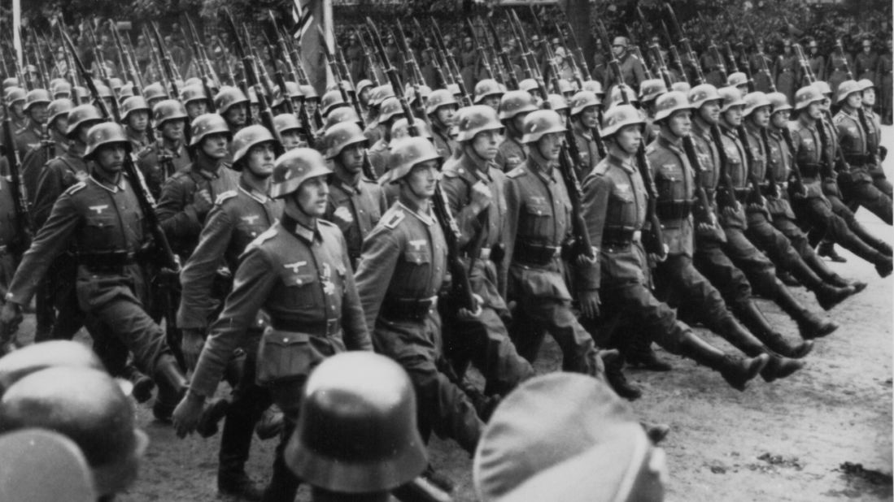

History Project
The Battle of Plassey was a decisive victory of the British East India Company, under the leadership of Robert Clive, over the Nawab of Bengal and his French[1] allies on 23 June 1757. The victory was made possible by the defection of Mir Jafar, Nawab Siraj-ud-Daulah's commander in chief. The battle helped the British East India Company take control of Bengal in 1772. Over the next hundred years, they continued to expand their control over vast territories in rest of the Indian subcontinent, including Burma.
The battle took place at Palashi (Anglicised version: Plassey) on the banks of the Hooghly River, about 150 kilometres (93 mi) north of Calcutta (now Kolkata) and south of Murshidabad in West Bengal, then capital of Bengal Subah. The belligerents were the British East India Company, and the Nawab Siraj-ud-Daulah, the last independent Nawab of Bengal. He succeeded Alivardi Khan (his maternal grandfather). Siraj-ud-Daulah had become the Nawab of Bengal the year before, and he had ordered the English to stop the extension of their fortification. Robert Clive bribed Mir Jafar, the commander-in-chief of the Nawab's army, and also promised to make him Nawab of Bengal. Clive defeated Siraj-ud-Daulah at Plassey in 1757 and captured Calcutta.
The battle was preceded by an attack on British-controlled Calcutta by Nawab Siraj-ud-Daulah and the Black Hole massacre. The British sent reinforcements under Colonel Robert Clive and Admiral Charles Watson from Madras to Bengal and recaptured Calcutta. Clive then seized the initiative to capture the French fort of Chandannagar.[3] Tensions and suspicions between Siraj-ud-daulah and the British culminated in the Battle of Plassey. The battle was waged during the Seven Years' War (1756–1763), and, in a mirror of their European rivalry, the French East India Company (La Compagnie des Indes Orientales)[1] sent a small contingent to fight against the British. Siraj-ud-Daulah had a vastly numerically superior force and made his stand at Plassey. The British, worried about being outnumbered, formed a conspiracy with Siraj-ud-Daulah's demoted army chief Mir Jafar, along with others such as Yar Lutuf Khan, Jagat Seths (Mahtab Chand and Swarup Chand), Umichand and Rai Durlabh. Mir Jafar, Rai Durlabh and Yar Lutuf Khan thus assembled their troops near the battlefield but made no move to actually join the battle. Siraj-ud-Daulah's army with about 50,000 soldiers (including defectors), 40 cannons and 10 war elephants was defeated by 3,000 soldiers of Col. Robert Clive, owing to the flight of Siraj-ud-Daulah from the battlefield and the inactivity of the conspirators. The battle ended in approximately 11 hours.

This is judged to be one of the pivotal battles in the control of Indian subcontinent by the colonial powers. The British now had a great deal of influence over the Nawab, Mir Jafar, and as a result, they were able to get important concessions for earlier losses and trade income. The British further used this revenue to increase their military might and push the other European colonial powers such as the Dutch and the French out of South Asia, thus expanding the British Empire.

The Battle of Buxar was fought between 22 and 23 October 1764, between the forces under the command of the British East India Company, led by Hector Munro, and the combined armies of Balwant Singh, Raja of Benaras; Mir Qasim, Nawab of Bengal till 1764; the Nawab of Awadh, Shuja-ud-Daula; and the Mughal Emperor, Shah Alam II.[3] The battle was fought at Buxar, a "strong fortified town" within the territory of Bihar, located on the banks of the Gangas river about 130 kilometres (81 mi) west of Patna; it was a challenging victory for the British East India Company. The war was brought to an end by the Treaty of Allahabad in 1765.[4] The defeated Indian rulers were forced to sign this treaty, granting the East India Company diwani rights, which allowed them to collect revenue from the territories of Bengal, Bihar, and Orissa on behalf of the Mughal emperor. This gave the company immense economic control, enabling them to pass financial policies to exploit the resources of the region for their own benefit.
The British engaged in the fighting numbered 17,072[5] comprising 1,859 British regulars, 5,297 Indian sepoys and 9,189 Indian cavalry. The alliance army's numbers were estimated to be over 40,000. According to other sources, the combined army of the Mughals, Awadh and Mir Qasim consisting of 10,000 men[6] was defeated by a British army comprising 7,000 men. A lack of basic co-ordination among these three disparate allies was responsible for their decisive defeat.[citation needed] Mirza Najaf Khan commanded the right flank of the Mughal imperial army and was the first to advance his forces against Major Hector Munro at daybreak; the British lines formed within twenty minutes and reversed the advance of the Mughals. According to the British, Durrani and Rohilla cavalry were also present and fought during the battle in various skirmishes. But by midday, the battle was over and Shuja-ud-Daula blew up large tumbrils and three massive magazines of gunpowder.
Munro divided his army into various columns and particularly pursued the Mughal Grand Vizier Shuja-ud-Daula the Nawab of Awadh who responded by blowing up his boat-bridge after crossing the river, thus abandoning the Mughal Emperor Shah Alam II and members of his own regiment. Mir Qasim also fled with his 3 million rupees worth of gemstones and later died in poverty in 1777. Mirza Najaf Khan reorganised formations around Shah Alam II, who retreated and then chose to negotiate with the victorious British.

The historian John William Fortescue claimed that the British casualties totalled 847: 39 killed and 64 wounded from the European regiments and 250 killed, 435 wounded and 85 missing from the East India Company's sepoys.[2] He also claimed that the three Indian allies suffered 2,000 dead and that many more were wounded.[2] Another source says that there were 69 European and 664 sepoy casualties on the British side and 6,000 casualties on the Mughal side.[8] The victors captured 133 pieces of artillery and over 1 million rupees of cash. Immediately after the battle, Munro decided to assist the Marathas, who were described as a "warlike race", well known for their relentless and unwavering hatred towards the Mughal Empire and its Nawabs and Mysore. According to one brigadier-general H. Biddulph, "the European infantry was composed of the Bengal European Battalion, two weak companies of the Bombay European Battalion, and small detachments of Marines and of H.M. 84th, 89th and 96th Regiments. The only officers killed were Lt. Francis Spilsbury of the 96th Foot and Ensign Richard Thompson of the Bengal European Battalion."
World War I[j] or the First World War (28 July 1914 – 11 November 1918) was a global conflict fought between two coalitions: the Allies and the Central Powers. Battles took place throughout Europe, the Middle East, Africa, the Pacific, and parts of Asia. One of the deadliest wars in history, it ultimately resulted in an estimated 9 million soldiers dead and 23 million wounded, plus another 5 million civilian deaths from numerous causes. Millions more died as a result of genocide, and the war was a major factor in the 1918 Spanish flu pandemic. Increasing diplomatic tensions between the European great powers reached a breaking point on 28 June 1914, when a Bosnian Serb named Gavrilo Princip assassinated Archduke Franz Ferdinand, heir to the Austro-Hungarian throne. Austria-Hungary held Serbia responsible, and declared war on 28 July. Russia came to Serbia's defence, and by 4 August, Germany, France, and Britain were drawn into the war, with the Ottoman Empire joining in November of the same year. Germany's strategy in 1914 was to first defeat France, then transfer forces to the Russian front. However, this failed, and by the end of 1914, the Western Front consisted of a continuous line of trenches stretching from the English Channel to Switzerland. The Eastern Front was more dynamic, but neither side could gain a decisive advantage, despite costly offensives. As the war expanded to more fronts, Bulgaria, Italy, Romania, Greece and others joined in from 1915 onward.
World War I[j] or the First World War (28 July 1914 – 11 November 1918) was a global conflict fought between two coalitions: the Allies and the Central Powers. Battles took place throughout Europe, the Middle East, Africa, the Pacific, and parts of Asia. One of the deadliest wars in history, it ultimately resulted in an estimated 9 million soldiers dead and 23 million wounded, plus another 5 million civilian deaths from numerous causes. Millions more died as a result of genocide, and the war was a major factor in the 1918 Spanish flu pandemic. Increasing diplomatic tensions between the European great powers reached a breaking point on 28 June 1914, when a Bosnian Serb named Gavrilo Princip assassinated Archduke Franz Ferdinand, heir to the Austro-Hungarian throne. Austria-Hungary held Serbia responsible, and declared war on 28 July. Russia came to Serbia's defence, and by 4 August, Germany, France, and Britain were drawn into the war, with the Ottoman Empire joining in November of the same year. Germany's strategy in 1914 was to first defeat France, then transfer forces to the Russian front. However, this failed, and by the end of 1914, the Western Front consisted of a continuous line of trenches stretching from the English Channel to Switzerland. The Eastern Front was more dynamic, but neither side could gain a decisive advantage, despite costly offensives. As the war expanded to more fronts, Bulgaria, Italy, Romania, Greece and others joined in from 1915 onward.
World War II[b] or the Second World War was a global conflict that lasted from 1939 to 1945. The vast majority of the world's countries, including all the great powers, fought as part of two opposing military alliances: the Allies and the Axis. Many participating countries invested all available economic, industrial, and scientific capabilities into this total war, blurring the distinction between civilian and military resources. Aircraft played a major role, enabling the strategic bombing of population centres and delivery of the only two nuclear weapons ever used in war. It was by far the deadliest conflict in history, resulting in 70–85 million fatalities. Millions died due to genocides, including the Holocaust, as well as starvation, massacres, and disease. In the wake of Axis defeat, Germany, Austria, and Japan were occupied, and war crime tribunals were conducted against German and Japanese leaders.
The causes of the war are debated; contributing factors included the rise of fascism in Europe, the Spanish Civil War, the Second Sino-Japanese War, Soviet–Japanese border conflicts, and tensions in the aftermath of World War I. World War II is generally considered to have begun on 1 September 1939, when Nazi Germany, under Adolf Hitler, invaded Poland. The United Kingdom and France declared war on Germany on 3 September. Under the Molotov–Ribbentrop Pact of August 1939, Germany and the Soviet Union had partitioned Poland and marked out their "spheres of influence" across Finland, Estonia, Latvia, Lithuania, and Romania. From late 1939 to early 1941, in a series of campaigns and treaties, Germany conquered or controlled much of continental Europe in a military alliance called the Axis with Italy, Japan, and other countries. Following the onset of campaigns in North and East Africa, and the fall of France in mid-1940, the war continued primarily between the European Axis powers and the British Empire, with the war in the Balkans, the aerial Battle of Britain, the Blitz of the UK, and the Battle of the Atlantic. In June 1941, Germany led the European Axis powers in an invasion of the Soviet Union, opening the Eastern Front, the largest land theatre of war in history.
Japan aimed to dominate East Asia and the Asia-Pacific, and by 1937 was at war with the Republic of China. In December 1941, Japan attacked American and British territories with near-simultaneous offensives against Southeast Asia and the Central Pacific, including an attack on Pearl Harbor which resulted in the United States and the United Kingdom declaring war against Japan.
The European Axis powers declared war on the US in solidarity. Japan soon conquered much of the western Pacific, but its advances were halted in 1942 after losing the critical Battle of Midway; Germany and Italy were defeated in North Africa and at Stalingrad in the Soviet Union. Key setbacks in 1943—including German defeats on the Eastern Front, the Allied invasions of Sicily and the Italian mainland, and Allied offensives in the Pacific—cost the Axis powers their initiative and forced them into strategic retreat on all fronts. In 1944, the Western Allies invaded German-occupied France, while the Soviet Union regained its territorial losses and pushed Germany and its allies back. During 1944–1945, Japan suffered reversals in mainland Asia, while the Allies crippled the Japanese Navy and captured key western Pacific islands. The war in Europe concluded with the liberation of German-occupied territories; the invasion of Germany by the Western Allies and the Soviet Union, culminating in the Fall of Berlin to Soviet troops; Hitler's suicide; and the German unconditional surrender on 8 May 1945. Following the refusal of Japan to surrender on the terms of the Potsdam Declaration, the US dropped the first atomic bombs on Hiroshima on 6 August and Nagasaki on 9 August. Faced with imminent invasion of the Japanese archipelago, the possibility of more atomic bombings, and the Soviet Union's declared entry into the war against Japan on the eve of invading Manchuria, Japan announced on 10 August its intention to surrender, signing a surrender document on 2 September 1945.